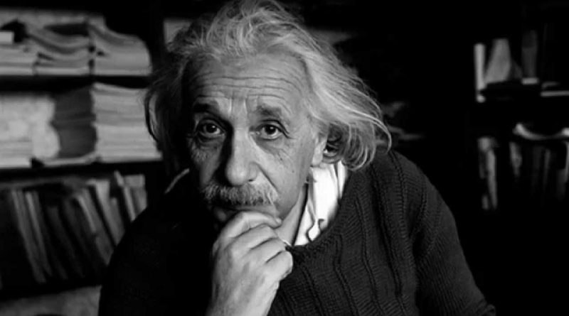

foi um físico teórico alemão que desenvolveu a teoria da relatividade geral, um dos pilares da física moderna ao lado da mecânica quântica. Embora mais conhecido por sua fórmula de equivalência massa-energia, E = mc² — que foi chamada de "a equação mais famosa do mundo" —, foi laureado com o Prêmio Nobel de Física de 1921 "por suas contribuições à física teórica" e, especialmente, por sua descoberta da lei do efeito fotoelétrico, que foi fundamental no estabelecimento da teoria quântica.
Nascido em uma família de judeus alemães, mudou-se para a Suíça ainda jovem e iniciou seus estudos na Escola Politécnica de Zurique. Após dois anos procurando emprego, obteve um cargo no escritório de patentes suíço enquanto ingressava no curso de doutorado da Universidade de Zurique. Em 1905, publicou uma série de artigos acadêmicos revolucionários. Uma de suas obras era o desenvolvimento da teoria da relatividade especial. Percebeu, no entanto, que o princípio da relatividade também poderia ser estendido para campos gravitacionais, e com a sua posterior teoria da gravitação, de 1916, publicou um artigo sobre a teoria da relatividade geral. Enquanto acumulava cargos em universidades e instituições, continuou a lidar com problemas da mecânica estatística e teoria quântica, o que levou às suas explicações sobre a teoria das partículas e o movimento browniano. Também investigou as propriedades térmicas da luz, o que lançou as bases da teoria dos fótons. Em 1917, aplicou a teoria da relatividade geral para modelar a estrutura do universo como um todo. Suas obras renderam-lhe o status de celebridade mundial enquanto tornava-se uma nova figura na história da humanidade, recebendo prêmios internacionais e sendo convidado de chefes de estado e autoridades.
